Итак, приступим! В этом первом разделе книги мы собираемся заложить основу для нашего проекта и объяснить основные принципы, которые вам необходимо знать для остальной части сборки приложения.
Информация в этой книге верна для последней версии Go (версия 1.15), и я рекомендую установить ее, если вы хотите продолжить.
Если у вас уже установлен Go, вы можете проверить, какая у вас версия, в терминале с помощью команды go version. Вывод должен выглядеть примерно так:
$ go version
go version go1.15 linux/amd64Если вам нужно обновить версию Go или установить Go с нуля, сделайте это прямо сейчас. Подробные инструкции для различных операционных систем можно найти здесь:
Прежде чем мы напишем какой-либо код, вам нужно создать каталог snippetbox на вашем компьютере, который будет служить «домом» верхнего уровня для этого проекта. Весь код Go, который мы пишем на протяжении всей книги , будет храниться здесь вместе с другими ресурсами, специфичными для проекта, такими как шаблоны HTML и файлы CSS.
Итак, если вы следуете инструкциям, откройте терминал и создайте новый каталог проекта с именем snippetbox в любом месте на вашем компьютере. Я собираюсь найти каталог моего проекта в $HOME/code, но вы можете выбрать другое место, если хотите.
$ mkdir -p $HOME/code/snippetboxЗаодно добавим в каталог проекта пустой файл main.go:
$ cd $HOME/code/snippetbox
$ touch main.goСледующее, что нам нужно сделать, это сообщить Go, что мы хотим использовать функциональные возможности модулей, чтобы помочь управлять (и контролировать версии) любыми сторонними пакетами, которые импортирует наш проект.
Но прежде чем мы сможем это сделать, нам нужно решить, каким должен быть путь к модулю для нашего проекта.
Если вы еще не знакомы с функциональностью модуля Go, путь к модулю — это, по сути, просто каноническое имя или идентификатор вашего проекта. Хотя вы можете использовать (почти) что угодно в качестве пути к модулю, важна уникальность. Чтобы избежать потенциальных конфликтов импорта с чужими пакетами или стандартной библиотекой в будущем, вы хотите выбрать путь к модулю, который является глобально уникальным и вряд ли будет использоваться кем-либо еще. в Go, общепринятым соглашением является пространство имен путей к модулям на основе принадлежащего вам URL-адреса.
В моем случае четкий, лаконичный и маловероятный путь к модулю для этого проекта будет turamant.net/snippetbox, и мы будем использовать его в оставшейся части книги. Если возможно, вы должны заменить это на что-то уникальное для вас.
Теперь, когда мы выбрали уникальный путь к модулям, давайте включим модули для проекта.
Для этого убедитесь, что вы находитесь в корне каталога вашего проекта, а затем запустите команду инициализации go mod, передав путь к вашему модулю в качестве параметра, например:
$ cd $HOME/code/snippetbox
$ go mod init turamant .net/snippetbox
go: создание нового go.mod: модуль turamant.net/snippetbox
На этом этапе каталог вашего проекта должен выглядеть примерно так, как показано на скриншоте ниже. Обратите внимание на созданный файл go.mod?
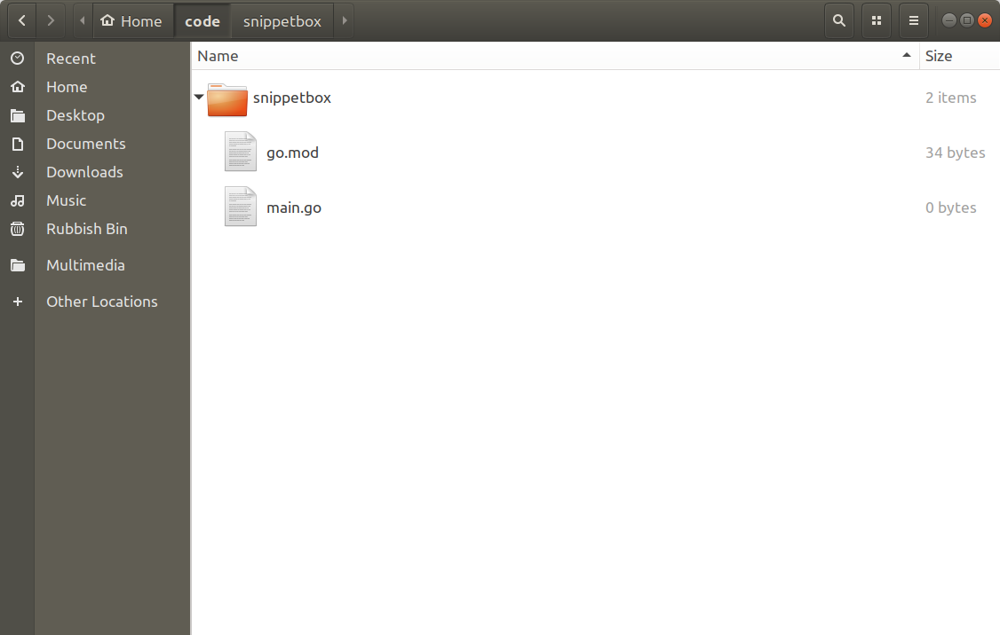
На данный момент в этом файле мало что происходит, и если вы откроете его в текстовом редакторе, он должен выглядеть так (но желательно с вашим собственным уникальным путем к модулю):
File: go.mod
module turamant.net/snippetbox
go 1.15Позже в нашей сборке мы увидим, как этот файл используется для определения сторонних пакетов (и их версий), которые требуются для нашего проекта.
Теперь нам нужно проверить еще одну вещь. Откройте окно терминала и запустите команду go env, чтобы получить информацию о вашей текущей установке Go и среде. Вывод должен выглядеть примерно так:
$ go env
GO111MODULE=""
GOARCH="amd64"
GOBIN=""
GOCACHE="/home/turamant/.cache/go-build"
GOENV="/home/turamant/.config/go/env"
GOEXE=""
GOFLAGS=""
GOHOSTARCH="amd64"
GOHOSTOS="linux"
GOINSECURE=""
GOMODCACHE="/home/turamant/go/pkg/mod"
GONOPROXY=""
GONOSUMDB=""
GOOS="linux"
GOPATH="/home/turamant/go"
GOPRIVATE=""
GOPROXY="https://proxy.golang.org,direct"
GOROOT="/usr/local/go"
GOSUMDB="sum.golang.org"
GOTMPDIR=""
GOTOOLDIR="/usr/local/go/pkg/tool/linux_amd64"
GCCGO="gccgo"
AR="ar"
CC="gcc"
CXX="g++"
CGO_ENABLED="1"
GOMOD="/home/turamant/Work/Golang College/Code/golangcollege.com/go.mod"
CGO_CFLAGS="-g -O2"
CGO_CPPFLAGS=""
CGO_CXXFLAGS="-g -O2"
CGO_FFLAGS="-g -O2"
CGO_LDFLAGS="-g -O2"
PKG_CONFIG="pkg-config"
GOGCCFLAGS="-fPIC -m64 -pthread -fmessage-length=0 -fdebug-prefix-map=/tmp/go-build733636700=/tmp/go-buildЗдесь важно обратить внимание на значение переменной окружения GO111MODULE, в моем случае это пустая строка "". Чтобы Go мог использовать модули, он должен иметь значение On, Auto или пустую строку «». Если для него установлено значение «Выкл.», измените эту переменную среды, прежде чем продолжить. Если вам интересно понять, что именно означают эти разные значения, то здесь есть дополнительная информация.
Если вы создаете пакет или приложение, которые могут быть загружены и использованы другими людьми и программами, рекомендуется, чтобы путь к вашему модулю совпадал с расположением , из которого можно загрузить код.
Например, если ваш пакет размещен по адресу https://github.com/foo/bar, путь к модулю для проекта должен быть github.com/foo/bar.
Теперь, когда все настроено правильно, давайте сделаем первую итерацию нашего веб-приложения. Мы начнем с трех абсолютно необходимых вещей:
Давайте объединим эти компоненты в файл main.go, чтобы создать работающее приложение.
File: main.go
package main
import (
"log"
"net/http"
)
// Define a home handler function which writes a byte slice containing
// "Hello from Snippetbox" as the response body.
func home(w http.ResponseWriter, r *http.Request) {
w.Write([]byte("Hello from Snippetbox"))
}
func main() {
// Use the http.NewServeMux() function to initialize a new servemux, then
// register the home function as the handler for the "/" URL pattern.
mux := http.NewServeMux()
mux.HandleFunc("/", home)
// Use the http.ListenAndServe() function to start a new web server. We pass in
// two parameters: the TCP network address to listen on (in this case ":4000")
// and the servemux we just created. If http.ListenAndServe() returns an error
// we use the log.Fatal() function to log the error message and exit. Note
// that any error returned by http.ListenAndServe() is always non-nil.
log.Println("Starting server on :4000")
err := http.ListenAndServe(":4000", mux)
log.Fatal(err)
}Примечание. Функция домашнего обработчика — это обычная функция Go с двумя параметрами. Параметр http.ResponseWriter предоставляет методы для сборки ответа HTTP и отправки его пользователю, а параметр *http.Request представляет собой указатель на структуру, которая содержит информацию о текущем запросе (например, метод HTTP и запрашиваемый URL-адрес). . Мы еще поговорим об этих параметрах и продемонстрируем, как их использовать, по ходу чтения книги.
Когда вы запускаете этот код, он должен запускать веб-сервер, прослушивающий порт 4000 вашего локального компьютера. Каждый раз, когда сервер получает новый HTTP-запрос, он передает запрос на servermux, а servermux, в свою очередь, проверяет URL-путь и отправляет запрос соответствующему обработчику.
Давайте попробуем. Сохраните файл main.go, а затем попробуйте запустить его из терминала с помощью команды go run.
$ cd $HOME/code/snippetbox
$ go run main.go
2023/08/02 10:08:07 Starting server on :4000Пока сервер работает, откройте веб-браузер и попробуйте посетить http://localhost:4000. Если все прошло по плану, вы должны увидеть страницу, которая выглядит примерно так:
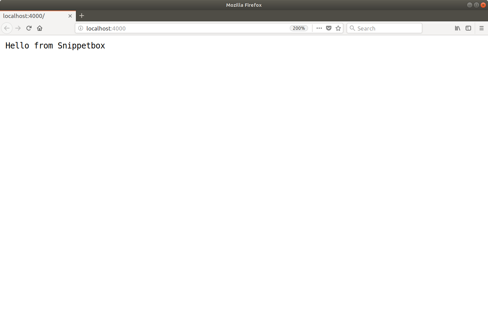
Важно: прежде чем мы продолжим, я должен объяснить, что servermux Go обрабатывает шаблон URL «/» как универсальный. Таким образом, на данный момент все HTTP-запросы к нашему серверу будут обрабатываться домашней функцией, независимо от их URL-пути. Например, вы можете посетить другой URL-адрес, такой как http://localhost:4000/foo, и вы получите точно такой же ответ.
Если вы вернетесь в окно терминала, вы можете остановить сервер, нажав Ctrl+c на клавиатуре.
Сетевой адрес TCP, который вы передаете в http.ListenAndServe(), должен иметь формат «хост:порт». Если вы опустите хост (как мы сделали с «: 4000»), сервер будет прослушивать все доступные сетевые интерфейсы вашего компьютера. Как правило, вам нужно указать хост в адресе только в том случае, если ваш компьютер имеет несколько сетевых интерфейсов и вы хотите прослушивать только один из них.
В других проектах или документации Go вы можете иногда видеть сетевые адреса, написанные с использованием именованных портов, таких как «: http» или «: http-alt» вместо числа. Если вы используете именованный порт, Go попытается найти соответствующий номер порта в вашем файле /etc/services. при запуске сервера или вернет ошибку, если совпадение не может быть найдено.
Во время разработки команда go run является удобным способом опробовать ваш код. По сути, это ярлык, который компилирует ваш код, создает исполняемый двоичный файл в вашем каталоге /tmp, а затем запускает этот двоичный файл за один шаг.
Он принимает либо список файлов .go, разделенных пробелами, либо путь к определенному пакету (где символ . представляет ваш текущий каталог), либо полный путь к модулю. Для нашего приложения на данный момент все три следующие команды эквивалентны:
$ go run main.go
$ go run .
$ go run turamant.net/snippetbox
Иметь веб-приложение только с одним маршрутом не очень интересно… и не очень полезно! Давайте добавим еще пару маршрутов, чтобы приложение начало формироваться так:
| URL шаблон | Handler | Действие |
|---|---|---|
| / | home | Показать домашнюю страницу |
| /snippet | showSnippet | Показать определенный фрагмент |
| /snippet/create | createSnippet | Создать новый фрагмент |
Снова откройте файл main.go и обновите его следующим образом:
File: main.go
package main
import (
"log"
"net/http"
)
func home(w http.ResponseWriter, r *http.Request) {
w.Write([]byte("Hello from Snippetbox"))
}
// Add a showSnippet handler function.
func showSnippet(w http.ResponseWriter, r *http.Request) {
w.Write([]byte("Display a specific snippet..."))
}
// Add a createSnippet handler function.
func createSnippet(w http.ResponseWriter, r *http.Request) {
w.Write([]byte("Create a new snippet..."))
}
func main() {
// Register the two new handler functions and corresponding URL patterns with
// the servemux, in exactly the same way that we did before.
mux := http.NewServeMux()
mux.HandleFunc("/", home)
mux.HandleFunc("/snippet", showSnippet)
mux.HandleFunc("/snippet/create", createSnippet)
log.Println("Starting server on :4000")
err := http.ListenAndServe(":4000", mux)
log.Fatal(err)
}Убедитесь, что эти изменения сохранены, а затем перезапустите веб-приложение:
$ cd $HOME/code/snippetbox
$ go run main.go
2023/08/02 11:36:25 Starting server on :4000Если вы перейдете по следующим ссылкам в своем веб-браузере, вы должны получить соответствующий ответ для каждого маршрута:
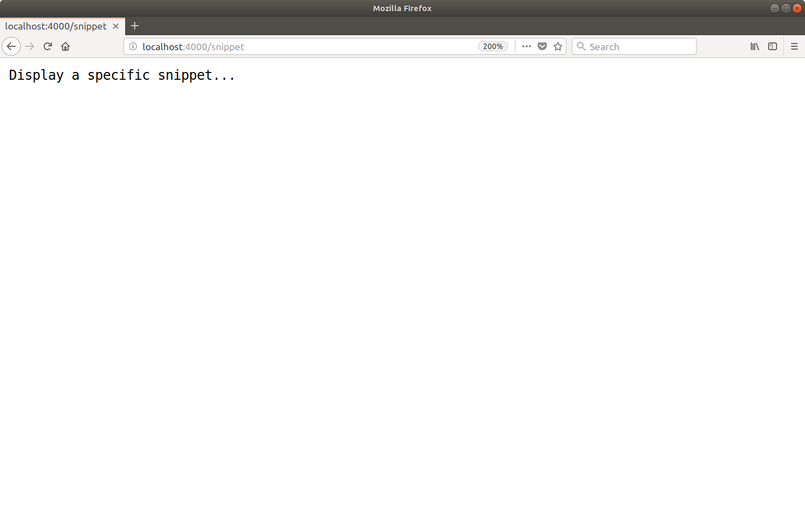
Теперь, когда два новых маршрута настроены и работают, давайте поговорим немного о теории.
Сервер Go поддерживает два разных типа шаблонов URL: фиксированные пути и пути поддеревьев. Фиксированные пути не заканчиваются косой чертой, тогда как пути поддеревьев заканчиваются косой чертой.
Два наших новых шаблона — «/snippet» и «/snippet/create» — являются примерами фиксированных путей. В servermux Go такие шаблоны фиксированного пути сопоставляются (и вызывается соответствующий обработчик) только тогда, когда путь URL-адреса запроса точно соответствует фиксированному пути.
Напротив, наш шаблон «/» является примером пути поддерева (поскольку он заканчивается косой чертой ). Другим примером может быть что-то вроде «/static/». сопоставляется (и вызывается соответствующий обработчик) всякий раз, когда начало пути URL-адреса запроса совпадает с путем поддерева. Если это поможет вашему пониманию, вы можете думать о путях поддеревьев как о том, что они имеют подстановочный знак в конце, например "/**" или "/static/**".
Это помогает объяснить, почему шаблон «/» действует как универсальное средство. Шаблон, по сути, означает соответствие одной косой черте, за которой следует что-либо (или вообще ничего).
Так что, если вы не хотите, чтобы шаблон «/» действовал как универсальный?
Например, в приложении, которое мы создаем, мы хотим, чтобы домашняя страница отображалась, если — и только если — путь URL-адреса запроса точно соответствует «/». В противном случае мы хотим, чтобы пользователь получил ответ 404 страница не найдена.
Для этого невозможно изменить поведение servermux Go, но вы можете включить простую проверку в домашнем обработчике, которая в конечном итоге даст тот же эффект:
File: main.go
package main
...
func home(w http.ResponseWriter, r *http.Request) {
// Check if the current request URL path exactly matches "/". If it doesn't, use
// the http.NotFound() function to send a 404 response to the client.
// Importantly, we then return from the handler. If we don't return the handler
// would keep executing and also write the "Hello from SnippetBox" message.
if r.URL.Path != "/" {
http.NotFound(w, r)
return
}
w.Write([]byte("Hello from Snippetbox"))
}
...Внесите это изменение, затем перезапустите сервер и сделайте запрос на незарегистрированный URL-адрес, например http://localhost:4000/missing. Вы должны получить ответ 404, который выглядит примерно так:
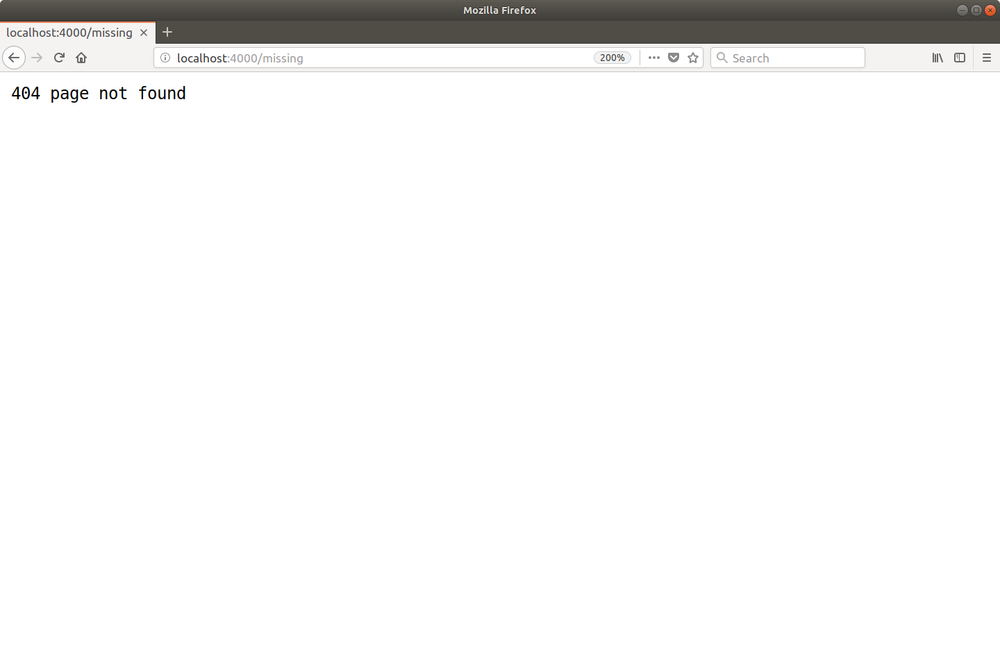
Если вы некоторое время работали с Go, вы, возможно, сталкивались с функциями http.Handle() и http.HandleFunc(). Это позволяет вам регистрировать маршруты без объявления servermux , например:
func main() {
http.HandleFunc("/", home)
http.HandleFunc("/snippet", showSnippet)
http.HandleFunc("/snippet/create", createSnippet)
log.Println("Starting server on :4000")
err := http.ListenAndServe(":4000", nil)
log.Fatal(err)
}За кулисами эти функции регистрируют свои маршруты с помощью чего-то, что называется DefaultServeMux . В этом нет ничего особенного — это обычный servermux, который мы уже использовали, но который инициализируется по умолчанию и сохраняется в глобальной переменной net/http. Вот соответствующая строка из исходного кода Go
var DefaultServeMux = NewServeMux()Хотя этот подход может сделать ваш код немного короче, я не рекомендую его для производственных приложений.
Поскольку DefaultServeMux является глобальной переменной, любой пакет может получить к ней доступ и зарегистрировать маршрут , включая любые сторонние пакеты, которые импортирует ваше приложение. Если один из этих сторонних пакетов будет скомпрометирован, они могут использовать DefaultServeMux для раскрытия вредоносного обработчика в Интернете.
Таким образом, в целях безопасности рекомендуется избегать DefaultServeMux и соответствующих вспомогательных функций. Вместо этого используйте свой собственный servermux с локальной областью действия, как мы делали до сих пор в этом проекте.
Можно включать имена хостов в ваши шаблоны URL. Это может быть полезно, если вы хотите перенаправить все HTTP-запросы на канонический URL-адрес или если ваше приложение действует как серверная часть для нескольких сайтов или служб. Например:
mux := http.NewServeMux()
mux.HandleFunc("foo.example.org/", fooHandler)
mux.HandleFunc("bar.example.org/", barHandler)
mux.HandleFunc("/baz", bazHandler)Когда дело доходит до сопоставления с шаблоном, сначала проверяются любые шаблоны, специфичные для хоста, и, если есть совпадение, запрос будет отправлен соответствующему обработчику. Только в том случае, если совпадение, специфичное для хоста, не найдено, будут также проверены шаблоны, не зависящие от хоста.
Важно признать, что функциональность маршрутизации, предоставляемая servermux Go, довольно легковесна. Он не поддерживает маршрутизацию на основе метода запроса, не поддерживает семантические URL-адреса с переменными в них и не поддерживает шаблоны на основе регулярных выражений. Если у вас есть опыт использования таких фреймворков, как Rails, Django или Laravel, вы можете найти это немного ограничительным… и удивительным!
Но пусть это вас не смущает. Реальность такова, что servermux Go все еще может продвинуть вас довольно далеко, и для многих приложений его вполне достаточно. Если вам нужно больше, есть огромный выбор сторонних маршрутизаторов, которые вы можете использовать вместо servermux Go. мы посмотрим на некоторые из популярных опций далее в книге.
Теперь давайте обновим наше приложение, чтобы маршрут /snippet/create отвечал только на HTTP- запросы, использующие метод POST, например:
| Method | Шаблон | Handler | Действие |
|---|---|---|---|
| Любой | / | home | Показать домашнюю страницу |
| Любой | /snippet | showSnippet | Показать определенный фрагмент |
| POST | /snippet/create | createSnippet | Создать новый фрагмент |
Внесение этого изменения важно, потому что позже в нашей сборке приложения запросы к маршруту /snippet/create приведут к созданию нового фрагмента в базе данных. Создание нового фрагмента в базе данных — это неидемпотентное действие, которое изменяет состояние нашего сервера, поэтому мы должны следовать хорошей практике HTTP и ограничить этот маршрут, чтобы он действовал только на POST-запросы.
Но основная причина, по которой я хочу рассказать об этом сейчас, заключается в том, что это хороший повод поговорить о заголовках ответов HTTP и объяснить, как их настраивать.
Давайте начнем с обновления нашей функции-обработчика createSnippet(), чтобы она отправляла код состояния HTTP 405 (метод не разрешен), если метод запроса не является POST. Для этого нам нужно использовать метод w.WriteHeader() следующим образом:
File: main.go
package main
...
func createSnippet(w http.ResponseWriter, r *http.Request) {
// Use r.Method to check whether the request is using POST or not. Note that
// http.MethodPost is a constant equal to the string "POST".
if r.Method != http.MethodPost {
// If it's not, use the w.WriteHeader() method to send a 405 status
// code and the w.Write() method to write a "Method Not Allowed"
// response body. We then return from the function so that the
// subsequent code is not executed.
w.WriteHeader(405)
w.Write([]byte("Method Not Allowed"))
return
}
w.Write([]byte("Create a new snippet..."))
}
...Хотя это изменение выглядит простым, есть несколько нюансов, которые я должен объяснить:
Давайте посмотрим на это в действии.
Перезапустите сервер, затем откройте второе окно терминала и используйте curl для отправки POST- запроса на http://localhost:4000/snippet/create. Вы должны получить ответ HTTP с кодом состояния 200 OK, подобным этому:
$ curl -i -X POST http://localhost:4000/snippet/create
HTTP/1.1 200 OK
Date: Thu, 02 Aug 2023 12:58:54 GMT
Content-Length: 23
Content-Type: text/plain; charset=utf-8
Create a new snippet...Но если вы используете другой метод запроса — например, GET, PUT или DELETE — теперь вы должны получить ответ с кодом состояния 405 Method Not Allowed. Например:
$ curl -i -X PUT http://localhost:4000/snippet/create
HTTP/1.1 405 Method Not Allowed
Date: Thu, 02 Aug 2023 12:59:16 GMT
Content-Length: 18
Content-Type: text/plain; charset=utf-8
Method Not AllowedЕще одно улучшение, которое мы можем сделать, — включить заголовок Allow: POST с каждым ответом 405 Method Not Allowed, чтобы сообщить пользователю, какие методы запроса поддерживаются для этого конкретного URL-адреса. Мы можем сделать это, используя метод w.Header().Set(), чтобы добавить новый заголовок в карту заголовков ответа, например:
File: main.go
package main
...
func createSnippet(w http.ResponseWriter, r *http.Request) {
if r.Method != http.MethodPost {
// Use the Header().Set() method to add an 'Allow: POST' header to the
// response header map. The first parameter is the header name, and
// the second parameter is the header value.
w.Header().Set("Allow", http.MethodPost)
w.WriteHeader(405)
w.Write([]byte("Method Not Allowed"))
return
}
w.Write([]byte("Create a new snippet..."))
}
...Важно: изменение карты заголовков ответа после вызова w.WriteHeader() или w.Write() не повлияет на заголовки, которые получает пользователь. Вы должны убедиться , что ваша карта заголовков ответа содержит все заголовки, которые вы хотите, прежде чем вызывать эти методы.
Давайте еще раз посмотрим на это в действии, отправив не-POST-запрос на наш URL-адрес /snippet/create, например
$ curl -i -X PUT http://localhost:4000/snippet/create
HTTP/1.1 405 Method Not Allowed
Allow: POST
Date: Thu, 02 Aug 2023 13:01:16 GMT
Content-Length: 18
Content-Type: text/plain; charset=utf-8
Method Not AllowedОбратите внимание, что ответ теперь включает заголовок Allow: POST?
Если вы хотите отправить код состояния, отличный от 200, и тело ответа в виде обычного текста (как в приведенном выше коде), то это хорошая возможность использовать ярлык http.Error(). Это легкая вспомогательная функция, которая принимает заданное сообщение и код состояния, а затем за кулисами вызывает для нас методы w.WriteHeader() и w.Write().
Давайте обновим код, чтобы использовать это вместо этого.
File: main.go
package main
...
func createSnippet(w http.ResponseWriter, r *http.Request) {
if r.Method != http.MethodPost {
w.Header().Set("Allow", http.MethodPost)
// Use the http.Error() function to send a 405 status code and "Method Not
// Allowed" string as the response body.
http.Error(w, "Method Not Allowed", 405)
return
}
w.Write([]byte("Create a new snippet..."))
}
...С точки зрения функциональности это почти то же самое. Самая большая разница в том, что теперь мы передаем наш http.ResponseWriter другой функции, которая отправляет ответ пользователю вместо нас.
Схема передачи http.ResponseWriter другим функциям очень распространена в Go, и мы будем много делать в этой книге. На практике методы w.Write() и w.WriteHeader() напрямую используются довольно редко, как мы это делали до сих пор. Но я хотел представить их заранее, потому что они лежат в основе более продвинутых (и интересных!) способов отправки ответов.
В приведенном выше коде мы использовали w.Header().Set() для добавления нового заголовка к заголовку ответа. карта. Но есть также методы Add(), Del() и Get(), которые вы также можете использовать для чтения и управления картой заголовков.
// Set a new cache-control header. If an existing "Cache-Control" header exists
// it will be overwritten.
w.Header().Set("Cache-Control", "public, max-age=31536000")
// In contrast, the Add() method appends a new "Cache-Control" header and can
// be called multiple times.
w.Header().Add("Cache-Control", "public")
w.Header().Add("Cache-Control", "max-age=31536000")
// Delete all values for the "Cache-Control" header.
w.Header().Del("Cache-Control")
// Retrieve the first value for the "Cache-Control" header.
w.Header().Get("Cache-Control")При отправке ответа Go автоматически установит для вас три системных заголовка: Date, Content-Length и Content-Type.
Заголовок Content-Type особенно интересен. Go попытается установить правильный для вас, анализируя содержимое тела ответа с помощью функции http.DetectContentType(). Если эта функция не может угадать тип контента, Go вернется к установке заголовка Content-Type: application/octet-stream вместо этого.
Функция http.DetectContentType() обычно работает довольно хорошо, но общая проблема для веб-разработчиков, плохо знакомых с Go, заключается в том, что она не может отличить JSON от обычного текста. Итак, по по умолчанию ответы JSON будут отправляться с Content-Type: text/plain; кодировка = заголовок utf-8. Вы можете предотвратить это, установив правильный заголовок вручную следующим образом:
w.Header().Set("Content-Type", "application/json")
w.Write([]byte(`{"name":"turamant"}`))Когда вы используете методы Add(), Get(), Set() и Del() на карте заголовков, имя заголовка всегда будет канонизироваться с помощью функции textproto.CanonicalMIMEHeaderKey(). Это преобразует первую букву и любую букву, следующую за дефисом, в верхний регистр, а остальные буквы в нижний регистр. На практике это означает, что при вызове этих методов имя заголовка нечувствительно к регистру.
Если вам нужно избежать такого поведения канонизации, вы можете напрямую редактировать базовую карту заголовка (она имеет тип map[string][]string). Например:
w.Header()["X-XSS-Protection"] = []string{"1; mode=block"}Примечание. Если используется соединение HTTP/2, Go всегда будет автоматически преобразовывать имена и значения заголовков в нижний регистр в соответствии со спецификациями HTTP/2.
Метод Del() не удаляет системные заголовки. Чтобы подавить их, вам нужно напрямую получить доступ к базовой карте заголовков и установить значение nil. Например, если вы хотите подавить заголовок Date, вам нужно написать:
w.Header()["Date"] = nilРаз уж мы заговорили о маршрутизации, давайте обновим обработчик showSnippet, чтобы он принимал параметр строки запроса id от пользователя, например:
| Method | Шаблон | Handler | Действие |
|---|---|---|---|
| Любой | / | home | Показать домашнюю страницу |
| Любой | /snippet?id=1 | showSnippet | Показать определенный фрагмент |
| POST | /snippet/create | createSnippet | Создать новый фрагмент |
Позже мы будем использовать этот параметр id, чтобы выбрать конкретный фрагмент из базы данных и показать его пользователю. Но сейчас мы просто прочитаем значение параметра id и интерполируем его с ответом-заполнителем.
Чтобы это работало, нам нужно обновить функцию обработчика showSnippet, чтобы она выполняла две вещи:
Вот как:
File: main.go
package main
import (
"fmt" // New import
"log"
"net/http"
"strconv" // New import
)
...
func showSnippet(w http.ResponseWriter, r *http.Request) {
// Extract the value of the id parameter from the query string and try to
// convert it to an integer using the strconv.Atoi() function. If it can't
// be converted to an integer, or the value is less than 1, we return a 404 page
// not found response.
id, err := strconv.Atoi(r.URL.Query().Get("id"))
if err != nil || id < 1 {
http.NotFound(w, r)
return
}
// Use the fmt.Fprintf() function to interpolate the id value with our response
// and write it to the http.ResponseWriter.
fmt.Fprintf(w, "Display a specific snippet with ID %d...", id)
}
...Давайте попробуем это.
Перезапустите приложение и попробуйте перейти по URL-адресу, например http://localhost:4000/snippet?id=123. Вы должны увидеть ответ, который выглядит примерно так:
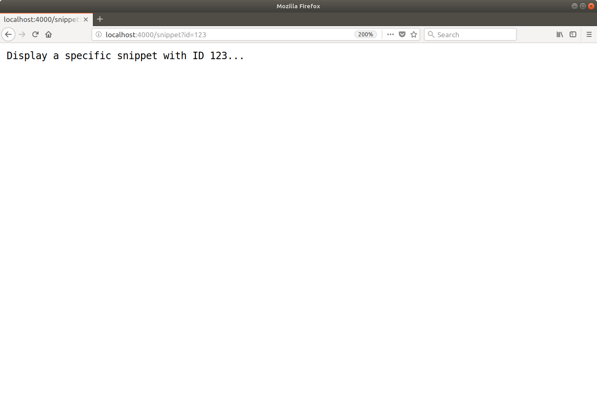
Вы также можете попробовать посетить некоторые URL-адреса, которые имеют недопустимые значения для параметра id или вообще не имеют параметра. Например:
Для всех этих запросов вы должны получить страницу 404, а не нашел отклик.
Приведенный выше код представил еще одну новую вещь за кулисами. Если вы посмотрите документацию для функции fmt.Fprintf(), вы заметите, что она принимает io.Writer в качестве первого параметра…
func Fprintf(w io.Writer, format string, a ...interface{}) (n int, err error)… но вместо этого мы передали ему наш объект http.ResponseWriter — и все заработало.
Мы можем сделать это, потому что тип io.Writer является интерфейсом, а объект http.ResponseWriter удовлетворяет интерфейсу, потому что у него есть метод w.Write().
Если вы новичок в Go, то концепция интерфейсов может быть немного запутанной, и я не хочу слишком зацикливаться на ней прямо сейчас. Достаточно знать, что — на практике — везде, где вы видите параметр io.Writer, его можно передать в ваш объект http.ResponseWriter. Все, что пишется, впоследствии будет отправлено в виде тела ответа HTTP.
Прежде чем мы добавим код в наш файл main.go, самое время подумать, как организовать и структурировать этот проект.
Важно заранее объяснить, что не существует единственно правильного — или даже рекомендуемого — способа структурировать веб-приложения в Go. И это и хорошо, и плохо. Это означает, что у вас есть свобода и гибкость в том, как вы организуете свой код, но также легко застрять в кроличьей норе неопределенности, пытаясь решить, какой должна быть лучшая структура.
По мере того, как вы приобретете опыт работы с Go, вы почувствуете, какие шаблоны хорошо работают для вас в различных ситуациях. Но в качестве отправной точки лучший совет, который я могу вам дать, — не усложняйте слишком много. Старайтесь добавлять структуру и сложность только тогда, когда это очевидно. нужный.
Для этого проекта мы реализуем структуру схемы, которая следует популярному и проверенному подходу. Это надежная отправная точка, и вы сможете повторно использовать общую структуру в самых разных проектах.
Если вы следуете инструкциям, убедитесь, что вы находитесь в корневом каталоге репозитория вашего проекта, и выполните следующие команды:
$ cd $HOME/code/snippetbox
$ rm main.go
$ mkdir -p cmd/web pkg ui/html ui/static
$ touch cmd/web/main.go
$ touch cmd/web/handlers.goСтруктура репозитория вашего проекта теперь должна выглядеть так:
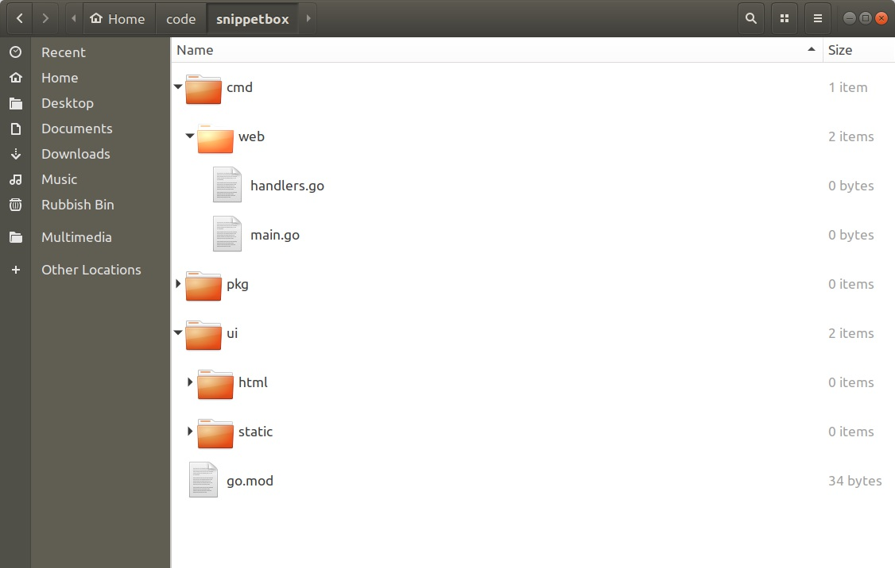
Давайте обсудим, для чего будет использоваться каждый из этих каталогов.
Итак, почему мы используем эту структуру?
Есть два больших преимущества:
Например, вы можете добавить CLI (интерфейс командной строки) для автоматизации некоторых административных задач в будущем. С помощью этой структуры вы можете создать это CLI- приложение в cmd/cli, и оно сможет импортировать и повторно использовать весь написанный вами код в каталоге pkg.
Давайте быстро перенесем код, который мы уже написали, для использования этой новой структуры.
File: cmd/web/main.go
package main
import (
"log"
"net/http"
)
func main() {
mux := http.NewServeMux()
mux.HandleFunc("/", home)
mux.HandleFunc("/snippet", showSnippet)
mux.HandleFunc("/snippet/create", createSnippet)
log.Println("Starting server on :4000")
err := http.ListenAndServe(":4000", mux)
log.Fatal(err)
}File: cmd/web/handlers.go
package main
import (
"fmt"
"net/http"
"strconv"
)
func home(w http.ResponseWriter, r *http.Request) {
if r.URL.Path != "/" {
http.NotFound(w, r)
return
}
w.Write([]byte("Hello from Snippetbox"))
}
func showSnippet(w http.ResponseWriter, r *http.Request) {
id, err := strconv.Atoi(r.URL.Query().Get("id"))
if err != nil || id < 1 {
http.NotFound(w, r)
return
}
fmt.Fprintf(w, "Display a specific snippet with ID %d...", id)
}
func createSnippet(w http.ResponseWriter, r *http.Request) {
if r.Method != http.MethodPost {
w.Header().Set("Allow", http.MethodPost)
http.Error(w, "Method Not Allowed", 405)
return
}
w.Write([]byte("Create a new snippet..."))
}Итак, теперь наше веб-приложение состоит из нескольких файлов исходного кода Go в каталоге cmd/web. Чтобы запустить их, мы можем использовать команду go run следующим образом:
$ cd $HOME/code/snippetbox
$ go run ./cmd/web
2023/08/02 17:24:28 Starting server on :4000Давайте вдохнем немного жизни в проект и разработаем правильную домашнюю страницу для нашего веб-приложения Snippetbox. В следующих нескольких главах мы будем работать над созданием страницы, которая будет выглядеть так:
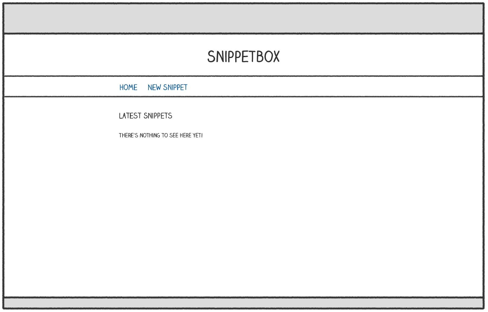
Для этого давайте сначала создадим новый файл шаблона в каталоге ui/html…
$ cd $HOME/code/snippetbox
$ touch ui/html/home.page.tmpl…а затем добавьте к нему следующую HTML-разметку для домашней страницы:
File: ui/html/home.page.tmpl
<!doctype html>
<html lang='en'>
<head>
<meta charset='utf-8'>
<title>Home - Snippetbox</title>
</head>
<body>
<header>
<h1><a href='/'>Snippetbox</a></h1>
</header>
<nav>
<a href="/">Home</a>
</nav>
<main>
<h2>Latest Snippets</h2>
<p>There's nothing to see here yet!</p>
</main>
</body>
</html>
Примечание. В этой книге мы будем использовать соглашение об именах..tmpl для файлов шаблонов, гдеявляется страницей, частичной или макетом. Возможность определить роль шаблона по имени файла поможет нам, когда дело дойдет до создания кэша шаблонов позже в книге.
Итак, теперь, когда мы создали файл шаблона с HTML-разметкой для домашней страницы, возникает следующий вопрос: как заставить наш домашний обработчик отображать ее?
Для этого нам нужно импортировать пакет Go html/template, который предоставляет набор функций для безопасного разбора и рендеринга HTML-шаблонов. Мы можем использовать функции этого пакета для анализа файла шаблона и последующего выполнения шаблона.
Я продемонстрирую. Откройте файл cmd/web/handlers.go и добавьте следующий код:
File: cmd/web/handlers.go
package main
import (
"fmt"
"html/template" // New import
"log" // New import
"net/http"
"strconv"
)
func home(w http.ResponseWriter, r *http.Request) {
if r.URL.Path != "/" {
http.NotFound(w, r)
return
}
// Use the template.ParseFiles() function to read the template file into a
// template set. If there's an error, we log the detailed error message and use
// the http.Error() function to send a generic 500 Internal Server Error
// response to the user.
ts, err := template.ParseFiles("./ui/html/home.page.tmpl")
if err != nil {
log.Println(err.Error())
http.Error(w, "Internal Server Error", 500)
return
}
// We then use the Execute() method on the template set to write the template
// content as the response body. The last parameter to Execute() represents any
// dynamic data that we want to pass in, which for now we'll leave as nil.
err = ts.Execute(w, nil)
if err != nil {
log.Println(err.Error())
http.Error(w, "Internal Server Error", 500)
}
}
...Важно отметить, что путь к файлу, который вы передаете функции template.ParseFiles(), должен быть либо относительным к вашему текущему рабочему каталогу, либо абсолютным путем. В приведенном выше коде я сделал путь относительно корня каталога проекта.
Итак, с учетом сказанного, убедитесь, что вы находитесь в корне каталога вашего проекта, и перезапустите приложение:
$ cd $HOME/code/snippetbox
$ go run ./cmd/web
2023/08/02 17:49:24 Starting server on :4000Затем откройте http://localhost:4000 в веб-браузере. Вы должны обнаружить, что домашняя страница HTML выглядит хорошо.
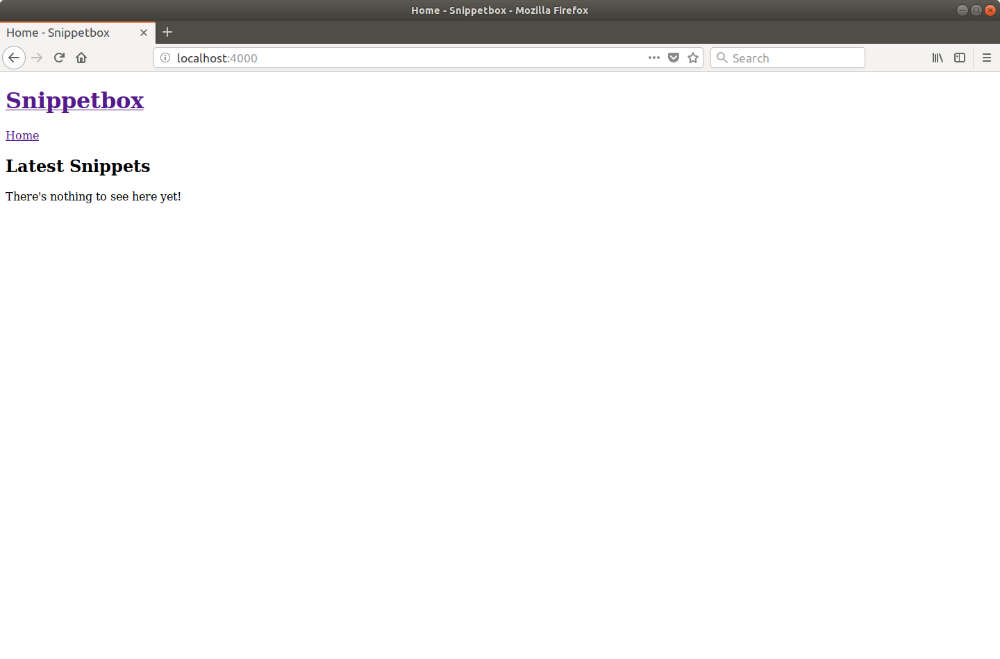
По мере того, как мы добавляем больше страниц в это веб-приложение, будет некоторая общая шаблонная HTML- разметка, которую мы хотим включить на каждую страницу — например, заголовок, навигация и метаданные внутри элемента HTML.
Чтобы избавить нас от ввода и предотвратить дублирование, рекомендуется создать шаблон макета (или мастер-шаблон), содержащий этот общий контент, который мы затем можем скомпоновать с разметкой для отдельных страниц.
Идем дальше и создаем новый файл ui/html/base.layout.tmpl…
$ touch ui/html/base.layout.tmplИ добавьте следующую разметку (которую мы хотим отображать на каждой странице):
File: ui/html/base.layout.tmpl
{{define "base"}}
<!doctype html>
<html lang='en'>
<head>
<meta charset='utf-8'>
<title>{{template "title" .}} - Snippetbox</title>
</head>
<body>
<header>
<h1><a href='/'>Snippetbox</a></h1>
</header>
<nav>
<a href='/'>Home</a>
</nav>
<main>
{{template "main" .}}
</main>
</body>
</html>
{{end}}Надеюсь, это покажется вам знакомым, если вы уже использовали шаблоны на других языках. По сути, это обычный HTML с некоторыми дополнительными действиями в двойных фигурных скобках.
Здесь мы используем действие {{define "base"}}...{{end}} для определения отдельного именованного шаблона с именем base, который содержит содержимое, которое мы хотим отображать на каждой странице.
Внутри этого мы используем действия {{template "title" .}} и {{template "main" .}}, чтобы обозначить, что мы хотим вызывать другие именованные шаблоны (называемые title и main) в определенной точке HTML.
Примечание. Если вам интересно, точка в конце действия {{template "title" .}} представляет любые динамические данные, которые вы хотите передать вызываемому шаблону. Мы поговорим об этом позже в книге
Теперь вернемся к ui/html/home.page.tmpl и обновим его, чтобы определить заголовок и основные именованные шаблоны, содержащие определенный контент для домашней страницы:
File: ui/html/home.page.tmpl
{{template "base" .}}
{{define "title"}}Home{{end}}
{{define "main"}}
<h2>Latest Snippets</h2>
<p>There's nothing to see here yet!</p>
{{end}}В самом верху этого файла находится, пожалуй, самая важная часть — действие {{template "base" .}}. Это информирует Go о том, что при выполнении файла home.page.tmpl мы хотим вызвать именованную базу шаблонов.
В свою очередь базовый шаблон содержит инструкции по вызову шаблонов title и main named. Я знаю, что поначалу это может показаться немного зацикленным, но держитесь меня… на практике этот шаблон работает очень хорошо.
Как только это будет сделано, следующим шагом будет обновление кода в вашем домашнем обработчике, чтобы он анализировал оба файла шаблона, например:
File: cmd/web/handlers.go
package main
...
func home(w http.ResponseWriter, r *http.Request) {
if r.URL.Path != "/" {
http.NotFound(w, r)
return
}
// Initialize a slice containing the paths to the two files. Note that the
// home.page.tmpl file must be the *first* file in the slice.
files := []string{
"./ui/html/home.page.tmpl",
"./ui/html/base.layout.tmpl",
}
// Use the template.ParseFiles() function to read the files and store the
// templates in a template set. Notice that we can pass the slice of file paths
// as a variadic parameter?
ts, err := template.ParseFiles(files...)
if err != nil {
log.Println(err.Error())
http.Error(w, "Internal Server Error", 500)
return
}
err = ts.Execute(w, nil)
if err != nil {
log.Println(err.Error())
http.Error(w, "Internal Server Error", 500)
}
}
...Итак, теперь, вместо непосредственного содержания HTML, наш набор шаблонов содержит 3 именованных шаблона (базовый, заголовок и основной) и инструкцию для вызова базового шаблона (который, в свою очередь, вызывает заголовок и основной шаблон).
Не стесняйтесь перезапустить сервер и попробовать. Вы должны обнаружить, что он отображает тот же результат, что и раньше (хотя в исходном HTML-коде, где находятся действия, будут дополнительные пробелы ).
Большим преимуществом использования этого шаблона для составления шаблонов является то, что вы можете четко определить специфичное для страницы содержимое в отдельных файлах на диске, а в этих файлах также контролировать, какой шаблон макета использует страница. Это особенно полезно для больших приложения, где разные страницы вашего приложения могут нуждаться в использовании разных макетов
Для некоторых приложений вам может понадобиться разбить определенные фрагменты HTML на части, которые можно повторно использовать на разных страницах или макетах. Чтобы проиллюстрировать это, давайте создадим партиал, содержащий некоторый контент нижнего колонтитула для нашего веб-приложения.
Создайте новый файл ui/html/footer.partial.tmpl и добавьте именованный шаблон с именем footer следующим образом:
$ touch ui/html/footer.partial.tmplFile: ui/html/footer.partial.tmpl
{{define "footer"}}
<footer>Powered by <a href='https://golang.org/'>Go</a></footer>
{{end}}Затем обновите базовый шаблон, чтобы он вызывал нижний колонтитул с помощью действия {{template "footer" .}}:
File: ui/html/base.layout.tmpl
{{define "base"}}
<!doctype html>
<html lang='en'>
<head>
<meta charset='utf-8'>
<title>{{template "title" .}} - Snippetbox</title>
</head>
<body>
<header>
<h1><a href='/'>Snippetbox</a></h1>
</header>
<nav>
<a href='/'>Home</a>
</nav>
<main>
{{template "main" .}}
</main>
<!-- Invoke the footer template -->
{{template "footer" .}}
</body>
</html>
{{end}}Наконец, нам нужно обновить домашний обработчик, чтобы он включал новый файл ui/html/footer.partial.tmpl при анализе файлов шаблонов:
File: cmd/web/handlers.go
package main
...
func home(w http.ResponseWriter, r *http.Request) {
if r.URL.Path != "/" {
http.NotFound(w, r)
return
}
// Include the footer partial in the template files.
files := []string{
"./ui/html/home.page.tmpl",
"./ui/html/base.layout.tmpl",
"./ui/html/footer.partial.tmpl",
}
ts, err := template.ParseFiles(files...)
if err != nil {
log.Println(err.Error())
http.Error(w, "Internal Server Error", 500)
return
}
err = ts.Execute(w, nil)
if err != nil {
log.Println(err.Error())
http.Error(w, "Internal Server Error", 500)
}
}
...После перезапуска сервера ваш базовый шаблон теперь должен вызывать шаблон нижнего колонтитула , и ваша домашняя страница должна выглядеть так:
В приведенном выше коде мы использовали действие {{template}} для вызова одного шаблона из другого. Но Go также предоставляет действие {{block}}...{{end}}, которое вы можете использовать вместо него. Это действует так же, как действие {{template}}, за исключением того, что позволяет указать некоторый контент по умолчанию, если вызываемый шаблон не существует в текущем наборе шаблонов.
В контексте веб-приложения это полезно, когда вы хотите предоставить некоторый контент по умолчанию (например, боковую панель), который отдельные страницы могут переопределять в каждом конкретном случае, если это необходимо.
Синтаксически вы используете это так:
{{define "base"}}
<h1>An example template</h1>
{{block "sidebar" .}}
<p>My default sidebar content</p>
{{end}}
{{end}}Но — если хотите — вам не нужно включать какой-либо контент по умолчанию между действиями {{block}} и {{end}}. В этом случае вызванный шаблон действует как «необязательный». Если шаблон существует в наборе шаблонов, он будет отображен. Но если это не так, то ничего не будет отображаться.
Теперь давайте улучшим внешний вид домашней страницы, добавив в наш проект несколько статических файлов CSS и изображений, а также немного кода JavaScript, чтобы выделить активный элемент навигации.
Если вы следуете инструкциям, вы можете взять необходимые файлы и извлечь их в папку ui/static, которую мы создали ранее, с помощью следующих команд:
$ cd $HOME/code/snippetbox
$ curl https://www.turamant.net/static/sb.v130.tar.gz | tar -xvz -C ./ui/static/Содержимое вашего каталога ui/static теперь должно выглядеть так:
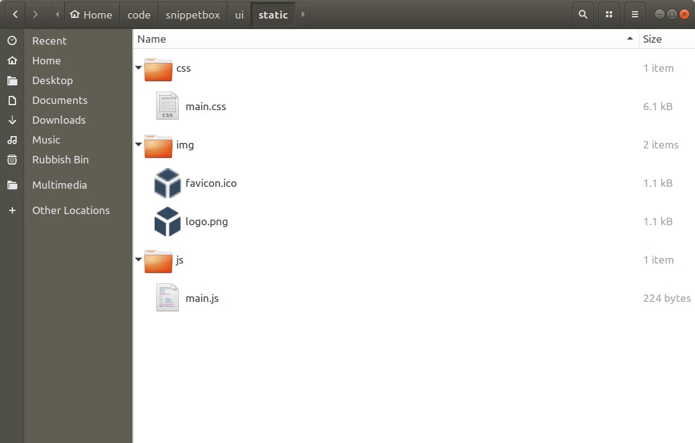
Пакет net/http Go поставляется со встроенным обработчиком http.FileServer, который вы можете использовать для обслуживания файлов по HTTP из определенного каталога. Давайте добавим в наше приложение новый маршрут, чтобы все запросы, начинающиеся с «/static/», обрабатывались с его помощью, например:
| Method | Шаблон | Handler | Действие |
|---|---|---|---|
| Любой | / | home | Показать домашнюю страницу |
| Любой | /snippet?id=1 | showSnippet | Показать определенный фрагмент |
| POST | /snippet/create | createSnippet | Создать новый фрагмент |
| Любой | /static/ | http.FileServer | Показать определенный статический файл |
Помните: шаблон «/static/» — это шаблон пути к поддереву, поэтому он действует так же, как если бы в конце был подстановочный знак.
Чтобы создать новый обработчик http.FileServer, нам нужно использовать функцию http.FileServer(), подобную этой
fileServer := http.FileServer(http.Dir("./ui/static"))Когда этот обработчик получает запрос, он удаляет начальную косую черту из пути URL-адреса , а затем ищет в каталоге ./ui/static соответствующий файл для отправки пользователю.
Итак, чтобы это работало правильно, мы должны удалить начальный «/ static» из пути URL-адреса, прежде чем передавать его в http.FileServer. В противном случае он будет искать файл, которого не существует, и пользователь получит ответ 404: страница не найдена. К счастью, в Go есть помощник http.StripPrefix() специально для этой задачи.
Откройте файл main.go и добавьте следующий код, чтобы файл в итоге выглядел так:
File: cmd/web/main.go
package main
import (
"log"
"net/http"
)
func main() {
mux := http.NewServeMux()
mux.HandleFunc("/", home)
mux.HandleFunc("/snippet", showSnippet)
mux.HandleFunc("/snippet/create", createSnippet)
// Create a file server which serves files out of the "./ui/static" directory.
// Note that the path given to the http.Dir function is relative to the project
// directory root.
fileServer := http.FileServer(http.Dir("./ui/static/"))
// Use the mux.Handle() function to register the file server as the handler for
// all URL paths that start with "/static/". For matching paths, we strip the
// "/static" prefix before the request reaches the file server.
mux.Handle("/static/", http.StripPrefix("/static", fileServer))
log.Println("Starting server on :4000")
err := http.ListenAndServe(":4000", mux)
log.Fatal(err)
}После этого перезапустите приложение и откройте http://localhost:4000/static/ в браузере. Вы должны увидеть список папок ui/static с возможностью навигации, который выглядит следующим образом:
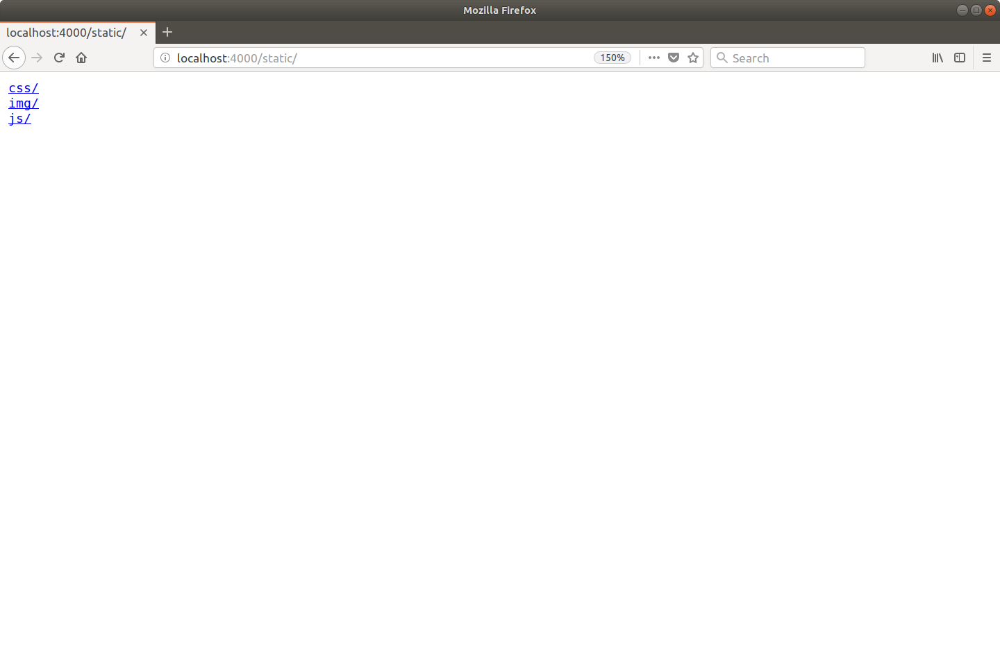
Не стесняйтесь поиграть и просмотреть список каталогов, чтобы просмотреть отдельные файлы. Например, если вы перейдете на http://localhost:4000/static/css/main.css, вы увидите, что файл CSS появится в вашем браузере следующим образом:
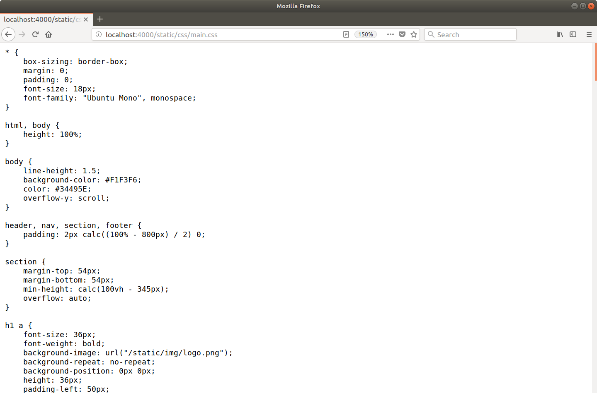
Теперь, когда файловый сервер работает правильно, мы можем обновить файл ui/html/base.layout.tmpl, чтобы использовать статические файлы:
File: ui/html/base.layout.tmpl
{{define "base"}}
<!doctype html>
<html lang='en'>
<head>
<meta charset='utf-8'>
<title>{{template "title" .}} - Snippetbox</title>
<!-- Link to the CSS stylesheet and favicon -->
<link rel='stylesheet' href='/static/css/main.css'>
<link rel='shortcut icon' href='/static/img/favicon.ico' type='image/x-icon'>
<!-- Also link to some fonts hosted by Google -->
<link rel='stylesheet' href='https://fonts.googleapis.com/css?family=Ubuntu+Mono:400,700'>
</head>
<body>
<header>
<h1><a href='/'>Snippetbox</a></h1>
</header>
<nav>
<a href='/'>Home</a>
</nav>
<main>
{{template "main" .}}
</main>
{{template "footer" .}}
<!-- And include the JavaScript file -->
<script src="/static/js/main.js" type="text/javascript"></script>
</body>
</html>
{{end}}Убедитесь, что вы сохранили изменения, а затем посетите http://localhost:4000. Теперь ваша домашняя страница должна выглядеть так:
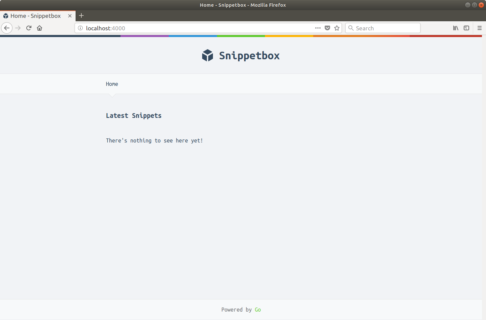
$ curl -i -H "Range: bytes=100-199" --output - http://localhost:4000/static/img/logo.png
HTTP/1.1 206 Partial Content
Accept-Ranges: bytes
Content-Length: 100
Content-Range: bytes 100-199/1075
Content-Type: image/png
Last-Modified: Thu, 04 May 2017 13:07:52 GMT
Date: Wed, 08 Aug 2023 16:21:16 GMT
[binary data]
В приведенном выше коде мы настроили наш файловый сервер так, чтобы он обслуживал файлы из каталога ./ui/static на вашем жестком диске.
Но важно отметить, что после запуска приложения http.FileServer, вероятно, не будет читать эти файлы с диска. Как Windows, так и операционные системы на основе Unix кэшируют недавно использованные файлы в ОЗУ, поэтому (по крайней мере, для часто обслуживаемых файлов) вполне вероятно, что http.FileServer будет обслуживать их из ОЗУ, а не выполнять относительно медленный обмен данными с вашим жестким диском. диск.
Иногда вам может понадобиться обслуживать один файл из обработчика. Для этого есть функция http.ServeFile(), которую вы можете использовать так:
func downloadHandler(w http.ResponseWriter, r *http.Request) {
http.ServeFile(w, r, "./ui/static/file.zip")
}Предупреждение: http.ServeFile() не очищает путь к файлу автоматически. Если вы строите путь к файлу из ненадежного пользовательского ввода, чтобы избежать атак с обходом каталога, вы должны дезинфицировать ввод с помощью filepath.Clean() перед его использованием.
Если вы хотите отключить списки каталогов, вы можете воспользоваться несколькими способами. Самый простой способ? Добавьте пустой файл index.html в определенный каталог, для которого вы хотите отключить списки. Затем он будет подаваться вместо списка каталогов, и пользователь получит ответ 200 OK без тела. Если вы хотите сделать это для всех каталогов в ./ui/static, вы можете использовать команду:
$ find ./ui/static -type d -exec touch {}/index.html \;Более сложное (но, возможно, лучшее) решение — создать пользовательскую реализацию http.FileSystem и заставить ее возвращать ошибку os.ErrNotExist для любых каталогов. Полное объяснение и пример кода можно найти в этом сообщении блога.
Прежде чем мы пойдем дальше, мы должны обсудить небольшую теорию. Это немного сложно, поэтому, если эта глава покажется вам трудной, не волнуйтесь. Продолжайте сборку приложения и вернитесь к ней позже, когда вы лучше познакомитесь с Go.
В предыдущих главах я использовал термин «обработчик», не объясняя, что он на самом деле означает. Строго говоря, под обработчиком мы подразумеваем объект, удовлетворяющий интерфейсу http.Handler:
type Handler interface {
ServeHTTP(ResponseWriter, *Request)
}Проще говоря, это означает, что для того, чтобы быть обработчиком, объект должен иметь метод ServeHTTP() с точной подписью:
ServeHTTP(http.ResponseWriter, *http.Request)Таким образом, в простейшей форме обработчик может выглядеть примерно так:
type home struct {}
func (h *home) ServeHTTP(w http.ResponseWriter, r *http.Request) {
w.Write([]byte("This is my home page"))
}Здесь у нас есть объект (в данном случае это домашняя структура, но в равной степени это может быть строка, функция или что-то еще), и мы реализовали метод с сигнатурой ServeHTTP(http.ResponseWriter, *http.Request) на это. Это все, что нам нужно для создания обработчика.
Затем вы можете зарегистрировать это с помощью servermux, используя метод Handle, например:
mux := http.NewServeMux()
mux.Handle("/", &home{})Теперь создание объекта только для того, чтобы мы могли реализовать для него метод ServeHTTP(), долго и немного запутанно. Вот почему на практике гораздо чаще писать обработчики как обычную функцию (как мы делали до сих пор). Например:
func home(w http.ResponseWriter, r *http.Request) {
w.Write([]byte("This is my home page"))
}Но эта домашняя функция — просто нормальная функция; у него нет метода ServeHTTP(). Так что сам по себе это не обработчик.
Вместо этого нам нужно преобразовать его в обработчик с помощью адаптера http.HandlerFunc(), например:
mux := http.NewServeMux()
mux.Handle("/", http.HandlerFunc(home))Адаптер http.HandlerFunc() автоматически добавляет метод ServeHTTP() к домашней функции. При выполнении этот метод ServeHTTP() просто вызывает содержимое исходной домашней функции. Это окольный, но удобный способ заставить обычную функцию удовлетворять требованиям интерфейса http.Handler.
До сих пор в этом проекте мы использовали метод HandleFunc() для регистрации наших функций-обработчиков с помощью servemux. Это просто некий синтаксический сахар, который преобразует функцию в обработчик и регистрирует ее за один шаг, вместо того, чтобы делать это вручную. Приведенный выше код функционально эквивалентен этому:
mux := http.NewServeMux()
mux.HandleFunc("/", home)Внимательные из вас могли заметить кое-что интересное в самом начале этого проекта. Функция http.ListenAndServe() принимает объект http.Handler в качестве второго параметра…
func ListenAndServe(addr string, handler Handler) error… но мы передавали сервисмультиплексор.
Мы смогли это сделать, потому что у servermux также есть метод ServeHTTP(), что означает, что он также удовлетворяет интерфейсу http.Handler.
Для меня упрощается представление о servermux как об особом виде обработчика, который вместо предоставления ответа сам передает запрос второму обработчику. Это не такой большой скачок, как может показаться на первый взгляд. Объединение обработчиков вместе — очень распространенная идиома в Go, и мы будем делать это позже в этом проекте.
На самом деле происходит следующее: когда наш сервер получает новый HTTP-запрос, он вызывает метод ServeHTTP() сервисмультиплексора. Это ищет соответствующий обработчик на основе запрашивать URL-адрес и, в свою очередь, вызывает метод ServeHTTP() этого обработчика. Вы можете представить себе веб-приложение Go как цепочку методов ServeHTTP(), вызываемых один за другим.
Есть еще одна вещь, на которую действительно важно обратить внимание: все входящие HTTP-запросы обслуживаются в собственной горутине. Для загруженных серверов это означает, что очень вероятно, что код в ваших обработчиках или вызываемый ими будет выполняться одновременно. Хотя это помогает сделать Go невероятно быстрым, недостатком является то, что вам нужно знать (и защищаться) от условий гонки при доступе к общим ресурсам от ваших обработчиков.